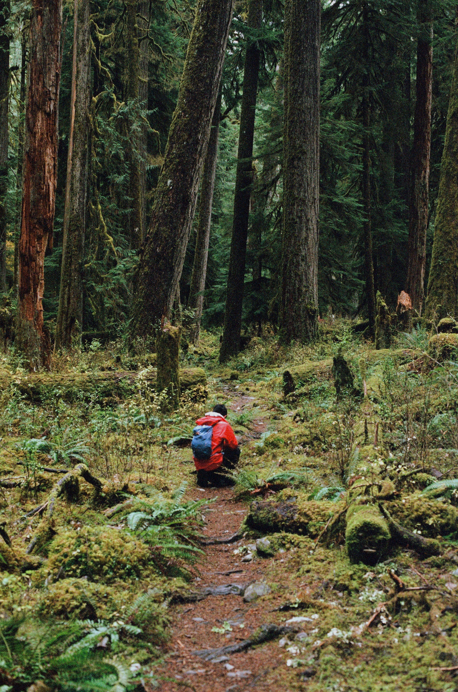
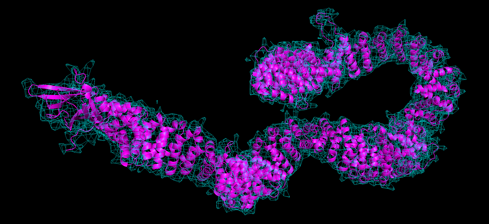
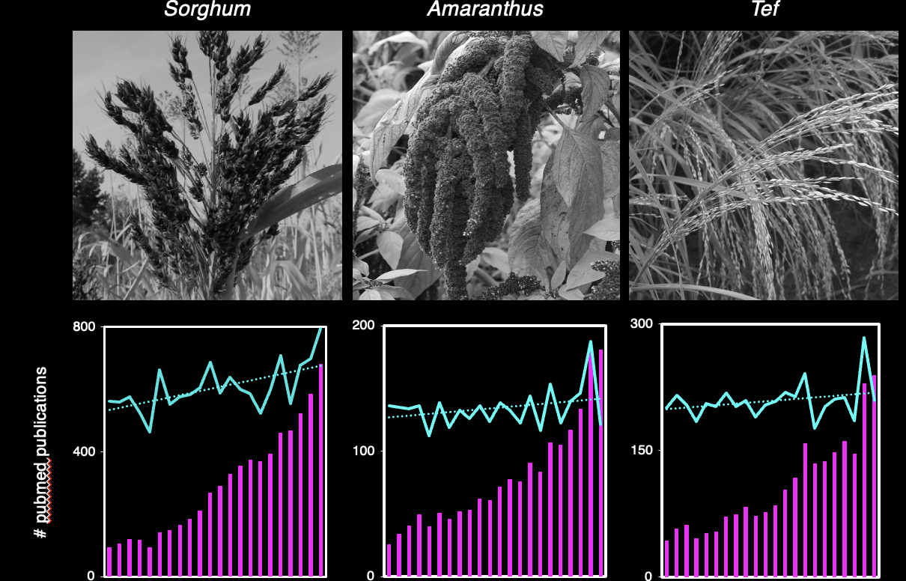

Will P. Dwyer
Bio Ph.D. Student @ Stanford, Dinneny Lab
Editor @ TheGoodScientists
Knight-Hennessy Scholar

Building a Sorghum Cell Atlas
Sorghum bicolor, a highly drought-tolerant grass species, is the world's 5th most important cereal crop and a promising source of biofuel. Despite its designation as a DOE flagship plant, few studies have examined Sorghum metabolism at the subcellular level. Using a combination of biolistics and confocal microscopy, we experimentally localize hundreds of Sorghum enzymes and generate a high-definition map of the Sorghum metabolic network.

Confocal microscopy images showing chloroplastic (A-C) and cytosolic (D-F) signal in biolistically transformed leaves of aquatic monocot Egeria densa. Candidate genes were tagged with C-term GFP and expressed under control of maize Ubiquitin1 promoter in modified pGVG vectors.
Improving Enzyme Function Prediction
Enzyme structure informs catalytic function. Leveraging newly released 3-dimensional structures from DeepMind's AlphaFold, I incorporate a curated library of 80,000+ protein models and state-of-the-art structural alignment algorithms to improve the efficacy of enzyme function prediction pipelines.
AlphaFold model of Arabidopsis thaliana cellulose synthase chain 3. Uniprot: F4I718 | AlphaFold: AtCSI3
Indigenous Crops Research
Indigenous crops, previously known as "Orphan crops", represent a crucial source of nutrients and revenue to the communities that cultivate them. Uniquely adapted to marginal growth conditions, Indigenous crops harbor vast reservoirs of genetic diversity and resilience traits. Research and terminology surrounding these precious crops, however, suffer from biases that risk damaging the rich history they share with their custodial communities. I partner with nonprofits and capacity building initiatives to examine the impact of colonial language and suggest an equitable framework for the study of Indigenous crops.
From left to right, photos of understudied Indigenous crops sorghum, amaranthus and tef grass, all three widely cultivated in Africa and South America. Plots below each image track the number of new PubMed results per-year for that crop over the last 20 years (magenta) and the rate of increase in publications (cyan).
Intrinsically Disordered Proteins
Intrinsically disordered proteins drive liquid-liquid phase separation (LLPS): the process by which soluble proteins spontaneously separate into a distinct gel-like phase and form granules, or so-called "membraneless organelles". Phase-separating bodies are emerging as novel compartmentalization strategy, but their exact function and mechanism of formation remain unclear. Honing in on a carbohydrate biosynthetic pathway in an Arabidopsis system, we explore the role of LLPS in plant metabolism.
AlphaFold model of Arabidopsis thaliana FIP1[III]-like protein, a highly disordered protein. Uniprot: F4JC20 | AlphaFold: FIPS3 .
Outreach & Advocacy
I am grateful for the privilege to pursue my intellectual curiosities and recognize that science is a space that remains unacessible and hostile to many. I believe researchers have a duty to rectify the wrongs of scientific institutions through storytelling, advocacy and direct action. My outreach efforts center around:
-Building platforms to engage researchers with nonprofits and think critically about the current state of science.
-Queer advocacy through writing and organizing.
-Support for anti-colonial scientific initiatives and local capacity building in historically exploited regions of the world.
About Me
Hello, and thanks for scrolling all the way down on my page! A little about me: I grew up in a small village called Louveciennes, in the Parisian suburbs of France, and moved to the outskirts of New York City with my family during high school. Following my pandemic graduation from Vassar Collegé (accent intentional) in 2020, I moved to California's Bay Area to train as a plant biologist. I'm currently a 2nd-year PhD student in the Dinneny Lab, where I study how plants sense water in their environment and design tools to visualize cells' physiological states. When I'm not at the bench, you are most likely to find me hammocking under coast redwoods or pulling cacti spines out of my hiking boots in the Mojave desert. My other hobbies include film photography, ulimate frisbee, and greeting nearly every ginkgo tree I encounter. My favorite reads this year are Dancer from the Dance (Holleran), Ecotopia (Callenbach), Braiding Sweetgrass (Kimmerer) and the timeless Overstory (Powers).
{kind=link}
{kind=link}
{kind=link}
Peer-reviewed Publications
Houten SM, Dodatko T, Dwyer W, Hongjie C, Stauffer B, DeVita RJ, Vaz FM, Yu C, Leandro J (2023) Acyl-CoA dehydrogenase substrate promiscuity: Challenges and opportunities for development of substrate reduction therapy in disorders of valine and isoleucine metabolism. Journal of Inherited Metabolic Disorders. doi
Dwyer W, Ibe C, and Rhee SY (2022) Renaming Indigenous crops and addressing colonial bias in scientific language. Trends in Plant Science. doi
Hawkins C, Ginzburg D, Zhao K, Dwyer W, Xue B, Xu A, Rice S, Cole B, Paley S, Karp P, and Rhee SY (2021) Plant Metabolic Network: A comprehensive resource of plant metabolic information. Journal of Integrated Plant Biology. doi
Field S, Dwyer W, and Rhee SY (2023) Virus manipulation of plant SG requires G3BP. In the works.
Field S, Dorone Y, Dwyer W, and Rhee SY (2023) The G3BP-RHM1 interaction is essential for maintaining rhamnosomes separate from stress granules. In the works.
Field S, Dorone Y, Dwyer W, and Rhee SY (2022) Elucidating the function of the novel phase separated rhamnosome organelle. In the works.
Contact
I'd love to hear from you. You can reach me at any of the following contacts. Cheers!
© Untitled. All rights reserved. Design: HTML5 UP.